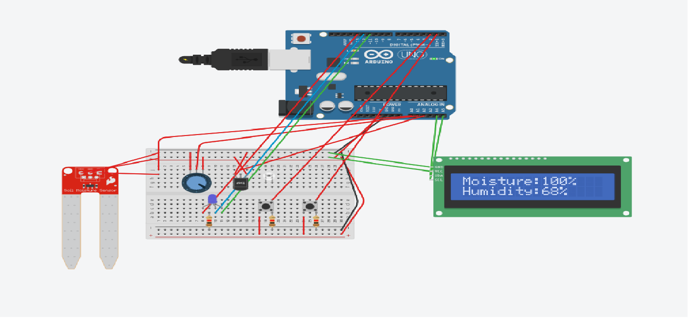

This Smart Greenhouse System uses sensors and automation to monitor
temperature, humidity and soil moisture. It automatically controls
irrigation and can send data to a website for monitoring.
The prototype includes a compact greenhouse structure and an Arduino-based monitoring and irrigation system.
Real-time greenhouse monitoring simulation.
25°C
60%
420
OFF
This project presents a Smart Greenhouse System designed to support Sustainable Development Goal 2: Zero Hunger. The system uses sensors and automation to monitor soil moisture, temperature, and humidity, allowing plants to grow in a controlled environment. By using an Arduino-based system, the greenhouse can automatically activate irrigation when the soil becomes too dry, improving efficiency and reducing water waste. This helps ensure consistent plant growth regardless of external weather conditions. The project demonstrates how technology can be used to improve food production, making it more reliable, sustainable, and accessible for communities facing food insecurity.
This code is the “brain” of the Smart Greenhouse System. It uses an Arduino to read information from sensors and then decide what to do. First, the soil moisture sensor checks how wet or dry the soil is. Then the humidity sensor measures the air moisture level. The Arduino processes these values and compares them to preset ranges. If the soil is too dry, the system shows that condition and changes the LED colour to warn the user. Red means the soil is dry, yellow means the soil is at a suitable level, and green means the soil is wet enough. At the same time, the LCD screen displays the current moisture and humidity percentages so the user can monitor the greenhouse in real time.

#include <Wire.h>
#include <LiquidCrystal_I2C.h>
LiquidCrystal_I2C lcd(0x27, 16, 2);
// Sensors
#define moistureSensor A0
#define humiditySensor A1
#define temperatureSensor A2 // not used yet
// LEDs
#define LED_RED 10
#define LED_BLUE 11
#define LED_GREEN 12
// Struct
struct AnalysisResult {
String moisture;
String humidity;
};
// Function declarations
int moistureRead(int analogPIN);
int humidityRead(int analogPIN);
void LED_Change(int RED, int GREEN, int BLUE);
AnalysisResult Analyze(int moistureValue, int humidityValue);
// Main
void setup() {
Serial.begin(9600);
pinMode(LED_RED, OUTPUT);
pinMode(LED_BLUE, OUTPUT);
pinMode(LED_GREEN, OUTPUT);
lcd.init();
lcd.backlight();
lcd.setCursor(0, 0);
lcd.print("Hello, World!");
delay(1000);
lcd.clear();
}
void loop() {
int moistureValue = moistureRead(moistureSensor);
int humidityValue = humidityRead(humiditySensor);
AnalysisResult analyzing = Analyze(moistureValue, humidityValue);
// LED control based on moisture
if (analyzing.moisture == "WET_M") {
LED_Change(0, 1, 0);
}
else if (analyzing.moisture == "DRY_M") {
LED_Change(1, 0, 0);
}
else if (analyzing.moisture == "ENOUGH_M") {
LED_Change(1, 1, 0);
}
Serial.print("Moisture: ");
Serial.print(moistureValue);
Serial.print("%, ");
Serial.print(analyzing.moisture);
Serial.print(" | Humidity: ");
Serial.print(humidityValue);
Serial.print("%, ");
Serial.println(analyzing.humidity);
lcd.setCursor(0, 0);
lcd.print("Moisture:");
lcd.print(moistureValue);
lcd.print("% ");
lcd.setCursor(0, 1);
lcd.print("Humidity:");
lcd.print(humidityValue);
lcd.print("% ");
delay(1000);
}
// Read soil moisture
int moistureRead(int analogPIN) {
int total = 0;
for (int i = 0; i < 10; i++) {
total += analogRead(analogPIN);
delay(5);
}
int value = total / 10;
int wetValue = 300;
int dryValue = 1023;
value = constrain(value, wetValue, dryValue);
int map_value = map(value, dryValue, wetValue, 0, 100);
return map_value;
}
// Read humidity
int humidityRead(int analogPIN) {
int total = 0;
for (int i = 0; i < 10; i++) {
total += analogRead(analogPIN);
delay(5);
}
int value = total / 10;
int percent = map(value, 0, 1023, 0, 100);
int humidityPercent = constrain(percent, 0, 100);
return humidityPercent;
}
// Change LED states
void LED_Change(int RED, int GREEN, int BLUE) {
digitalWrite(LED_RED, RED);
digitalWrite(LED_GREEN, GREEN);
digitalWrite(LED_BLUE, BLUE);
}
// Analyze values
AnalysisResult Analyze(int moistureValue, int humidityValue) {
struct Status {
int Moisture_Dry;
int Moisture_Wet;
int Humidity_Dry;
int Humidity_Wet;
};
Status TreeStereotype;
TreeStereotype.Moisture_Dry = 30;
TreeStereotype.Moisture_Wet = 70;
TreeStereotype.Humidity_Dry = 40;
TreeStereotype.Humidity_Wet = 70;
String Moisture;
String Humidity;
if (moistureValue < TreeStereotype.Moisture_Dry) {
Moisture = "DRY_M";
}
else if (moistureValue >= TreeStereotype.Moisture_Dry && moistureValue < TreeStereotype.Moisture_Wet) {
Moisture = "ENOUGH_M";
}
else {
Moisture = "WET_M";
}
if (humidityValue < TreeStereotype.Humidity_Dry) {
Humidity = "DRY_H";
}
else if (humidityValue >= TreeStereotype.Humidity_Dry && humidityValue < TreeStereotype.Humidity_Wet) {
Humidity = "ENOUGH_H";
}
else {
Humidity = "WET_H";
}
AnalysisResult result;
result.moisture = Moisture;
result.humidity = Humidity;
return result;
}